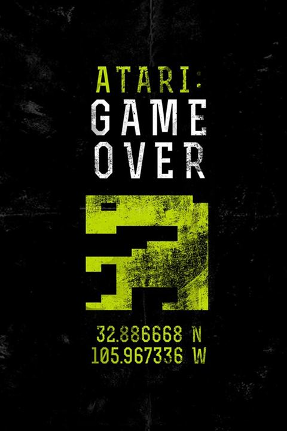

L’histoire de la célèbre entreprise Atari, pionnière dans le développement de jeux vidéos et des bornes d’arcade depuis les années 70, est sur le point d’être adaptée sur grand écran. Ce qui peut surprendre dans ce projet, c’est que les producteurs se tournent vers la cryptomonnaie pour financer le film. Fondée par Nolan Bushnell en 1972, Atari est connu pour avoir créé les premiers jeux vidéos et bornes d’arcade de l’histoire comme Pong, Pac-Man, Asteroids et Space Invaders. Un film permettrait d’en savoir plus sur les fondations de l’entreprise, mais le projet nous surprend surtout dans sa manière d’être financé. En effet, les producteurs ont choisi la cryptomonnaie pour financer le long-métrage. La société Vision Tree prévoit de vendre des jetons "Bushnell tokens" en ayant pour objectif de réunir 40 millions de dollars, avec le soutien de l’entreprise de Leonardo Di Caprio, Appian Way, qui participe aussi au financement. Le producteur J.D. Seraphine a expliqué à Variety que les joueurs qui auront acheté cette monnaie auront un droit de regard sur le scénario, mais aussi le casting. «Le film avait reçu plusieurs offres de financement conventionnel de la part des studios, mais nous avons choisi la cryptomonnaie pour accélérer le processus de création d’une tout autre manière, permettant aux fans d’Atari de suivre le développement avec nous. Nous voulions laisser aux fans et aux joueurs d’Atari la possibilité de s’approprier le projet.» Dans la même veine que «the social network» de David Fincher, le film suivra l’histoire de la création d’Atari à travers son fondateur Nolan Bushnell.
ATARI Le Film
